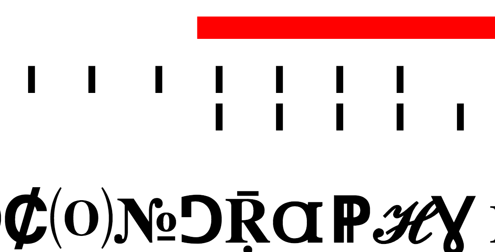

HTML Composition
Using the HTML elements we discussed in class, create a formal composition that you find beautiful. Each element should be used at least ten (10) times. How can you utilize elements about the web to emphasize emotions or convey ideas? What ideas and interactions are unique to the web? In what ways can use the language of the web to convey these ideas? Consider how the composition changes while the user scrolls and resizes the browser.

HTML/CSS Composition
Using the HTML elements we discussed in class, create a formal composition that you find beautiful. Each element should be used at least ten (10) times. How can you utilize elements about the web to emphasize emotions or convey ideas? What ideas and interactions are unique to the web? In what ways can use the language of the web to convey these ideas? Consider how the composition changes while the user scrolls and resizes the browser.